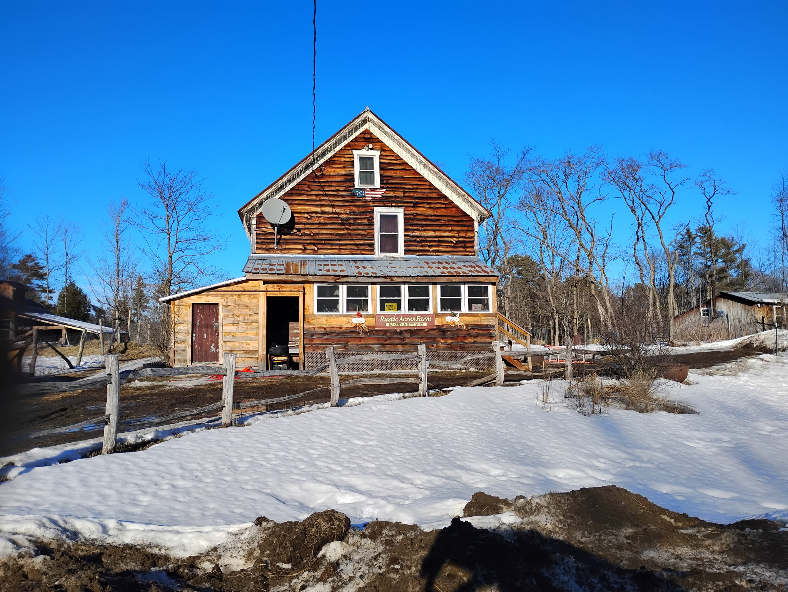
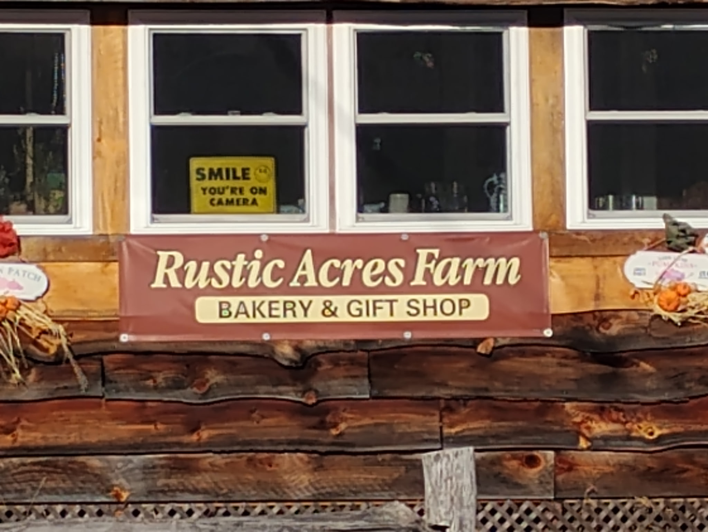
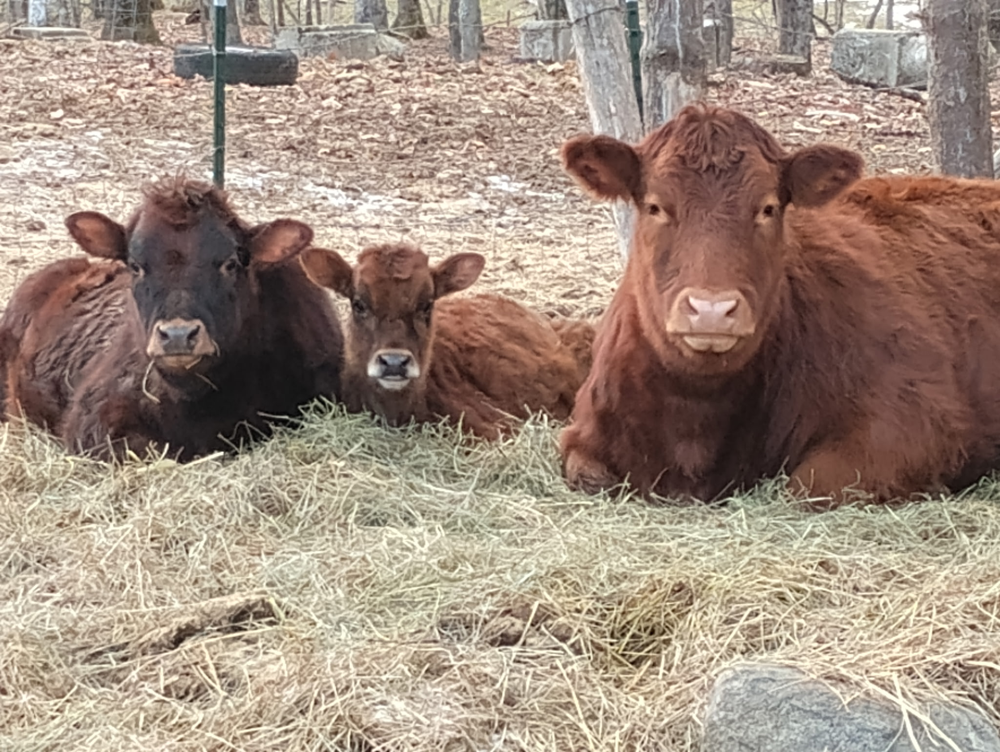

Rustic Acres
Farm-raised meats & local goods
Rustic Acres is a pasture-based farm raising animals with care, patience, and respect for the land. We offer farm-raised meats, eggs, and seasonal vegetables, all produced using simple, non-GMO practices.

Explore the farm

About
Discover how Rustic Acres is run and the simple, honest practices behind the farm.

Products
See what’s offered at the farm, from meats and eggs to seasonal vegetables and baked goods, all raised without GMOs.

Events
Join us for seasonal events at the farm and plan your visit around what’s coming up.